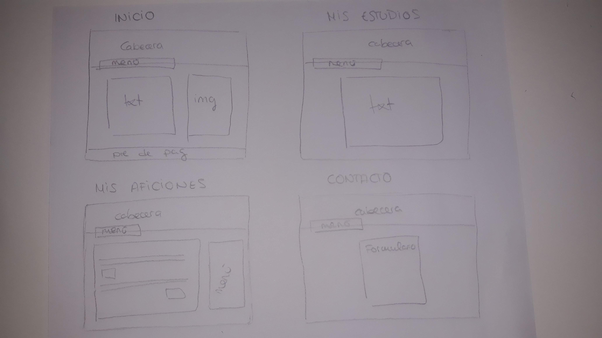

En primer lugar, los colores que he utilizado en el proyecto son siempre los mismos tonos, azul, morado, blanco y negro. He combinado los colores morado y azul para la cabezara para darle un toque informal con el degradado. Solo los he utilizado de fondo en la cabecera y en el recuadro para destacar esas zonas y evitar sobrecargar el resto de la página.
Para el color de las letras he utilizado el color blanco, que destaca mas sobre morado y azul que el negro, da sensación de calma.
Para el menú desplegable y el menú lateral de mis aficiones, he utilizado el color negro para dar un contraste con el resto de la página.
En segundo lugar, he utilizado dos tipos de tipografía. Una más informal para la cabecera de la página. Me gustó esta tipografía porque daba la sensación de que está escrito a mano.
La otra tipografía, utilizada para el resto del texto, es una sin mucha decoración. He elegido esa letra mas sencilla, porque yo creo, que si hay mucho texto y eliges una tipografia con mucha decorción, la página se vería muy sobrecargada.
Por último, el favicon que he creado es unicono redondo con mis iniciales y en color moradoporque es uno de los colores principales de la página.
